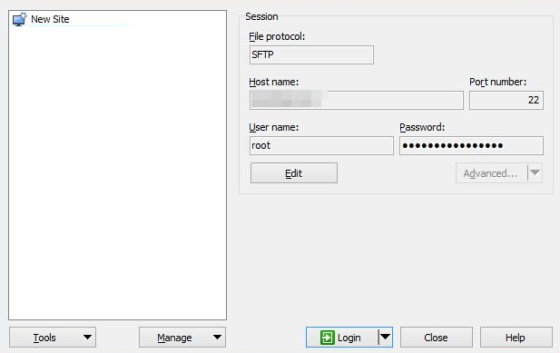

Scenarios
WinSCP can be used to securely copy-paste files across local and remote computers. Compared with FTP, WinSCP allows you to use a username and password to access the destination server without any additional configuration on the server.
To transfer a file from a local Windows computer to a Linux ECS, WinSCP is commonly used. This section describes how to transfer files from a local Windows computer to a Linux ECS using WinSCP. In this example, the ECS running CentOS 7.2 is used as an example.
Prerequisites
- The target ECS is running.
- The ECS has an EIP bound. For details, see Binding an EIP.
Solution
- Download WinSCP.
- Install WinSCP.
- Start WinSCP.

Set parameters as follows:
- File protocol: Set this to SFTP or SCP.
- Host name: Enter the EIP bound to the ECS. Log in to the management console to obtain the EIP.
- Port number: 22 by default.
- User Name: Enter the username for logging in to the ECS.
- If the ECS is logged in using an SSH key pair,
- The username is core for a CoreOS public image.
- The username is root for a non-CoreOS public image.
- If the ECS is logged in using a password, the username is root for a public image.
- Password: the password set when you created the ECS or converted using a key.
- Click Login.
- Drag a file from the local computer on the left to the remotely logged in ECS on the right to transfer the file.